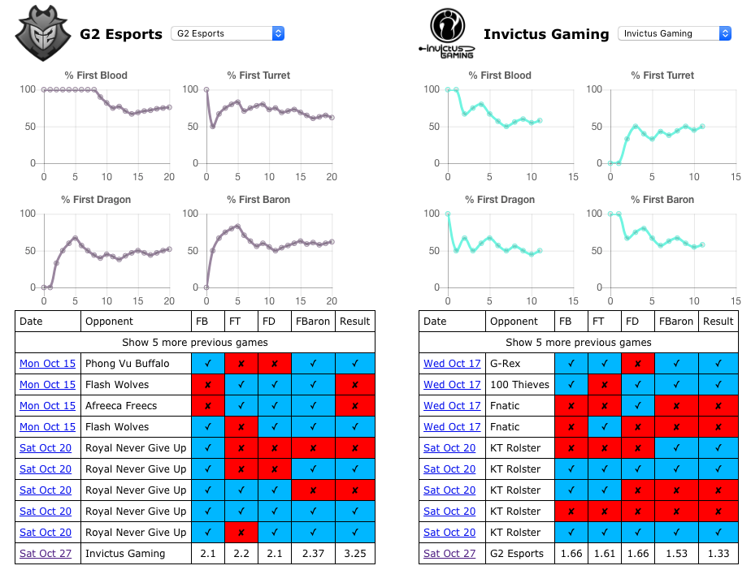

The Expected Value, or EV, is the average amount of value you can expect to derive from a bet. Before looking at concrete example, let's look at a simple example: a coin flip.
Let's say a casino is offering 2x odds on a coin flipping heads. For every heads that is flipped, you win two dollars. Factoring in your initial bet of $1, your net profit is $1. If you lose, you get nothing. The EV for this market can be calculated as follows:
((Chance of winning + Chance of losing) / 2) * odds
Which works out to be:
((0.5 + 0.5) /2) * 2 = 1
The EV of this bet is 1 - for each dollar bet, you can expect to earn one dollar back. This does not include the initial bet, so your total profit will be approximately 0 in the long run, assuming 50% and 50% tails. The EV is there 1. This makes sense - we expect heads roughly 50% of the time. An EV of 1 represents a theoretically perfect balanced bet. This also means that and EV above 1 represents what should be an overall profitable market.
Let's calculate the EV for Invictus Gaming vs G2 Esports for the first blood market, using data from the last 8 games.
Intuitively, just looking at the graphs, G2 have a high first blood percentage. The EV analysis can help us verify if this is a good market to bet on.
G2 achieved 6/8 first bloods, or 75%. Invictus got 4/8, or 50%. So, for G2, we can say the odds are:
(Team chance to get FB) + (Opponent chance to not get FB) / 2
Which works out to be:
(0.75 + 0.50) / 2 = 0.625. A 62.5% chance.
Invitus, on the other hand:
(0.50 + 0.25) / 2 = 0.375. A 37.5% chance.
Now we have the odds, let's check out the EV by multiplying the odds with the expected chance of success:
G2: 0.625 * 2.1 = 1.31.
Invitus: 0.375 * 1.66 = 0.62.
We expect to profit 30c for each $1 bet on G2 getting FB, based on the past 8 games. Not the largest sample size, but still a positive EV. You can expect to lose around 38c per $1 bet on Invitus.
This is the basic idea behind EV. LCS Tracking aggregates data to allow you to quickly and easily identify bets with a positive EV.